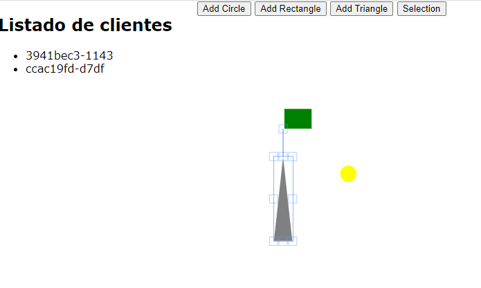

Ángel Álvarez Rodríguez
Se ha construido una aplicación utilizando WebSocket. Esta aplicación dispone de un canvas que permite a los usuarios realizar dibujos colaborativos.
El cliente dispone únicamente de un canvas, a través de Fabric.js podemos crear formas.
El cliente permite crear objetos de características aleatorias
function randomNumber() {
return Math.random() * 250;
}
function randomColor() {
const colores = ["blue", "green", "red", "black", "gray", "yellow"];
const index = Math.round(Math.random() * (colores.length - 1));
return colores[index];
}
function getUniqueID(){
function s4() {
return Math.floor((1 + Math.random()) * 0x10000).toString(16).substring(1);
}
return s4() + s4() + '-' + s4();
};
La aplicacion Client envia como dato al servidor el ultimo objeto creado
function sendObject() {
//No se puede mandar todo el canvas solo el objeto en cuestion
var listObjects = canvas.getObjects();
var lastObject = listObjects[listObjects.length - 1];
//Lo convertimos en un objeto genérico para agregarle el id
var objGenerico = JSON.parse(JSON.stringify(lastObject));
objGenerico.id = lastObject.id;
console.log("objGenerico" + JSON.stringify(objGenerico));
websocket.send(JSON.stringify(objGenerico));
}
Si se arrastra uno de los objetos, también se envía para ser modificado en el servidor
window.addEventListener("load", function (event) {
var isObjectMoving = false;
canvas.on('object:moving', function (event) {
isObjectMoving = true;
});
canvas.on('mouse:up', function (event) {
if (isObjectMoving) {
isObjectMoving = false;
//Lo convertimos en un objeto generico para agregarle el id
var objGenerico = JSON.parse(JSON.stringify(event.target));
objGenerico.id = event.target.id;
console.log("objGenerico" + JSON.stringify(objGenerico));
websocket.send(JSON.stringify(objGenerico));
}
});
});
Para identificar los objetos y poder distinguir si se ha creado o se ha movido, les asignamos un Id en el momento de su creación
var objGenerico = JSON.parse(JSON.stringify(lastObject));
objGenerico.id = lastObject.id;
Recibe la informacion del objeto y lo almacena
ws.on('message', function incoming(message) {
if (isJson(message)) {
var obj = JSON.parse(message);
console.log('obj: %s', JSON.stringify(obj));
//Cuando movemos enviamos todo el canvas de nuevo
if (elementos.objects.filter(function(e) { return e.id === obj.id; }).length > 0) {
elementIndex = elementos.objects.findIndex((elemento => elemento.id == obj.id));
elementos.objects[elementIndex] = obj;
wss.broadcast(message, this);
}else{
elementos.objects.push(obj)
wss.broadcast(message, this);
console.log('broadcasting data');
}
}
console.log('received: %s', message);
});
También se encarga de la gestión de los clientes, asignándoles un ID único
wss.getUniqueID = function () {
function s4() {
return Math.floor((1 + Math.random()) * 0x10000).toString(16).substring(1);
}
return s4() + s4() + '-' + s4();
};
La parte servidora almacena en un array los objetos enviados por el cliente, así como los Id de los clientes conectados
//array para almacenar las figuras
var elementos = { "objects": [] , "clientsId":[]};